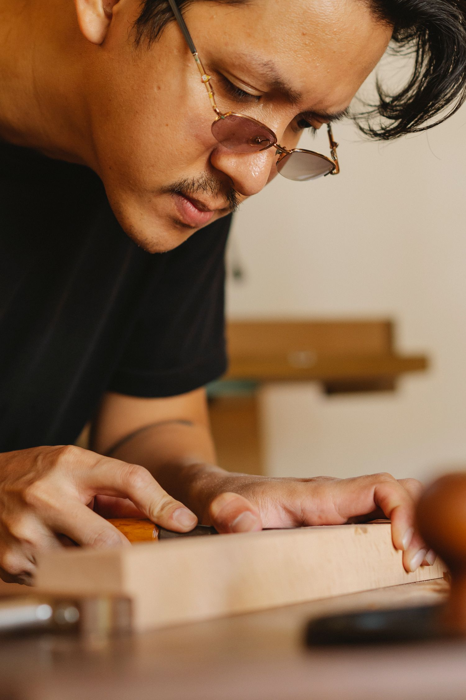
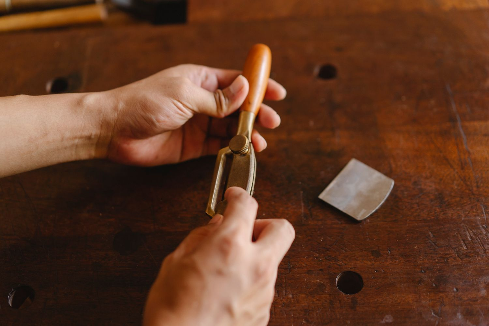

Keep what matters.
A pencil line, a worn edge, a patch of old color. We talk about those details before we remove anything. The piece should still feel connected to the wood you brought us.
The workshop
A small furniture workshop with a soft spot for old timber, a well-worn workbench and the stories people bring through the door.

Making a piece from old wood asks you to pay attention. To the grain, the places it’s been repaired, the edges someone’s hands have softened.
We carry that attention into the whole commission. You speak to the people thinking about your piece, and the people making it. There’s room to ask a question, change a detail and get the finish right.
Our name brings together “morrow” and the grain of wood. It’s a small reminder to look after what we have, and make something useful for tomorrow.
A pencil line, a worn edge, a patch of old color. We talk about those details before we remove anything. The piece should still feel connected to the wood you brought us.
Tables need room for knees. Benches need to feel steady when you’re taking off your boots. Shelves need to hold the heavy books. The quiet practical details get as much attention as the silhouette.
Wood will move, pick up marks and change with the light. We consider joinery, finishes and future care at the drawing stage, so the piece can be looked after as life happens around it.


It won’t all match. Some boards will carry more color, a deeper knot or a line you can feel under your fingers. We make room for those differences, and show you how they can belong together.
You bring the story. We’ll put the kettle on and help you find the shape of it.
Start a conversation